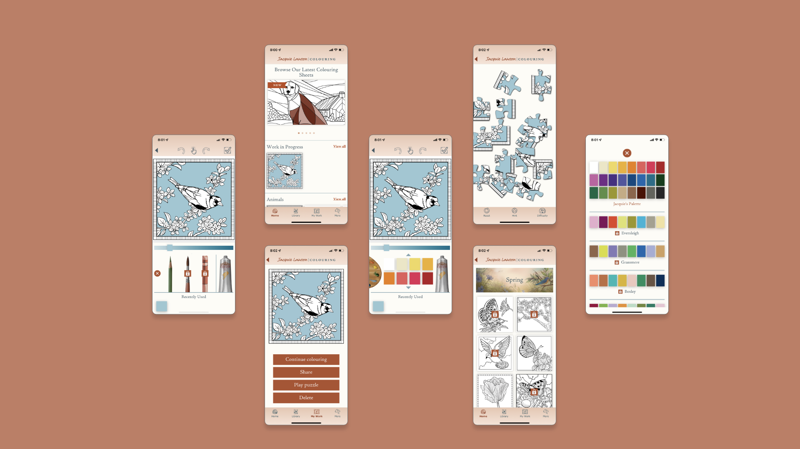
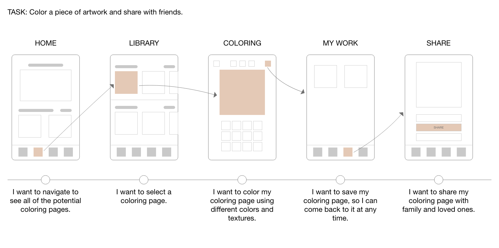

Jacquie Lawson Colouring
Add a bit of colour to your day
Jacquie Lawson, a subsidiary of American Greetings, started as a small British ecard business in 2002 that expanded to include games, advent calendars and much more! Known for elegant artwork, high-quality animation and music, Jacquie Lawson aspires to bring joy to their users, and with that - the colouring app was launched! Adult coloring apps are known to reduce stress and anxiety, while subsequently bringing joy to users.
Jacquie Lawson Colouring was created to reduce stress, prompt creativity and encourage interaction with artwork.
Role
UX Research
Journey Mapping
Wireframing
Client
Jacquie Lawson
Duration
5 months
Problem Statement
Jacquie Lawson users have expressed their desires to interact with the artwork over the years. While they love the current ecards - both sending and receiving, they want another way to connect with the brand.
Simultaneously, the world was reemerging from the pandemic that shuttered doors. This greatly affected older individuals, including much of Jacquie Lawson's userbase, and many reported increased levels of anxiety and high stress.
So how can Jacquie Lawson help and give back to the community?
In a 2006 study, researchers at Thomas Jefferson University found that art therapy for women can significantly decrease symptoms of physical and emotional stress. Furthermore, researchers have also found that coloring complex geometric designs, such as mandalas can lead to a reduction in anxiety levels and suggests coloring may induce a meditative state.
We wanted to create a mobile experience that allows users to connect with Jacquie Lawson while reducing stress.
Team
During this design process, I worked cross-functionally with several teams ranging from business, creative and development. On the business side, I collaborated with the product manager to align UX goals with that of the brand. I communicated my ideas and designs to the business analysts, who documented and wrote requirements. In the design phase, I worked with two Visual Designers, as well the Creative Director to ensure that the design fit our target audience and brand. We worked iteratively and I provided several low-fidelity wireframes and prototypes.
Process
Research
Conduct competitive analysis and present findings to product managers to determine functional requirements.
Wireframes
Low fidelity paper prototypes. High fidelity prototype using AdobeXD.
Improvements
Gather user feedback post app-launch and ideate ways to improve the user experience.
Research
During the research phase, I was directly responsible for performing a competitive audit on three similar coloring platforms. Through this audit, I captured details about the UX, navigation and features.
Coloring can be more complex than it seems. We needed a way for users to be able to express their creativity through colors and textures, as well as make the app accessible for older users with sight or limited mobility. Several complex challenges were identified during the competitive audit and research sessions. Iterating and validating functional requirements was essential, especially with our development time constraints.
During this period, it was the utmost importance for the UX team to work closely with the business and development teams to determine feasibility and ideate solutions to our challenges.
Competitive Audit
User Flow
Before creating wires, I developed the ideal flow of how a user should navigate through our app. This gave us a baseline for user testing.
Solution
With our objective to bring joy and relieve stress of our current userbase, we introduced Jacquie Lawson Colouring. This app enables users to color their stress away. After completing a coloring page, they're able to further interact with this artwork by creating a puzzle out of it, or sharing it with their loved ones.
Wireframes
How it works
Coloring made simple: Designing for mobile means making use of smaller spaces. We made it easy for users to color small spaces by implementing features such as: pinch & zoom, recent used colors and swipe to color.
Since our user base consists of mostly of older women, we wanted the coloring area to occupy the majority of the screen and focus. However, we still needed to make room for key features such as color palettes and different coloring tools.
The color palette was placed on the left side for easy access to a wide variety of color themes. Since there's no limitations to the shades of colors, the decision to add a recently used color feature at the bottom serves as personalized color palette. Users can bounce back and forth between colors and this feature will save the latest five. We felt that this feature was extremely important to users as they switch between color palettes and color gradients.
The interaction between the different tools was also a matter of debate. The objective was to find an easy way for users to access and browse different tools to color without occupying too much space on the screen. The solution ended up being a slide out drawer with selected tools. To ensure that the paint tube was not overlooked as a way to open the tools, a tutorial was implemented on users' first interaction with the coloring screen.
Interact with artwork: In previous Jacquie Lawson games and advent calendars, users enjoyed a variety of puzzles. However, their puzzle choices were often limited, and feedback from our previous games suggest that users enjoyment would increase with more puzzle variety. Our solution was to integrate this feature in the coloring app.
The purpose of the app was not to compete with other coloring competitors, but serve as a complement to the Jacquie Lawson brand. Since the user base already enjoys games and puzzles, we decided to take their artwork to the next level and allow them to interact with it. Mimicking our other games, we've added several difficulty levels where users can challenge themselves and enjoy their creations.
A large part of Jacquie Lawson's brand is sharing. Whether ecards, games or artwork, users often enjoy sharing with their loved ones. With this in mind, we allowed users to share their artwork in two places: once they finish coloring and on their My Work page. This allows users to share at any time through text, email, and social media.
Final Product
Lessons Learned
As the coloring app continues to serve users, the team is constantly learning and growing with the addition of user feedback. However, I recognize that there could have been more extensive user testing and feedback, during the gathering of requirements and creation of the prototype.
- Initially, one survey was sent out during the research phase to gather interest, however more surveys could have been sent out after the launch to gather feedback.
- A/B Testing could have been used to determine the pricing and subscription.
Conclusion
The Jacquie Lawson Colouring app launched on the Apple App Store and Google Play in October of 2021. The feedback we received from users were positive, with many stating that the designs are beautifully executed and align with the brand. The team is still actively gathering user feedback and iterating to create the best possible experience for our users.
Next Steps
The app has received high praise from users, and the development team plans to add additional features that would expand the userbase. Potential features include:
- Gallery
- Art Upload
-
This option would allow users to not only share their artwork with friends, but also foster
a community within the app. Users can use this feature to get inspired and engage with
others' artwork through comments.
-
Users can feel even more connected by uploading their own coloring sheets. From personal
photos to images found online, this option would expand the selection of a user's coloring
and puzzle options.
Thank you for exploring Jacquie Lawson Colouring! Hopeful you enjoyed this case study.